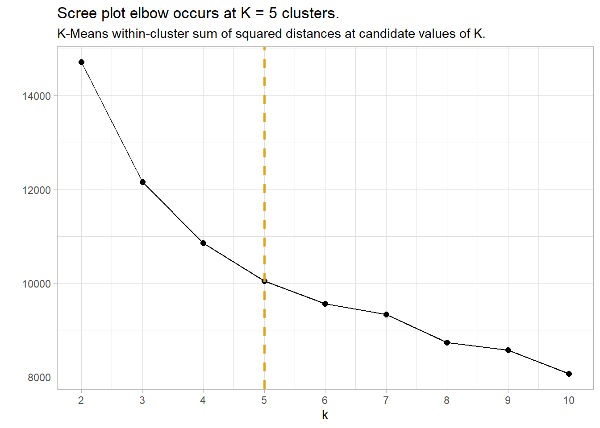
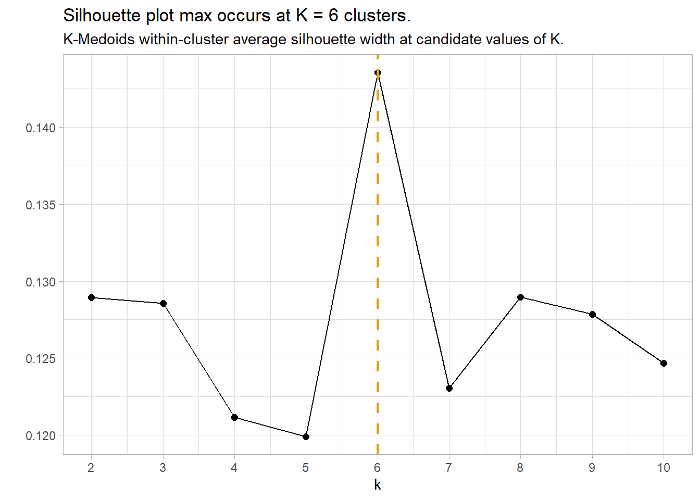
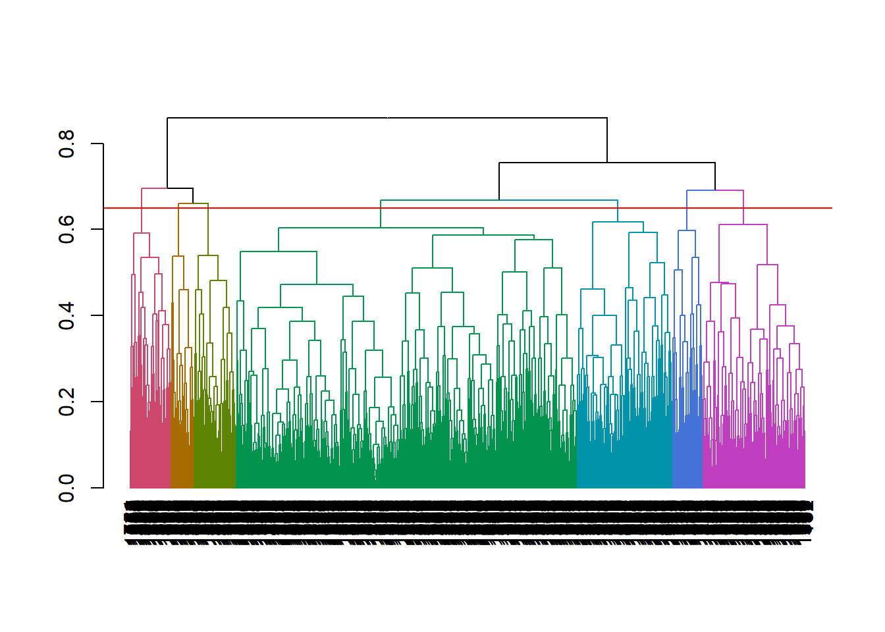

Cluster analysis is a data exploration (mining) in which an algorithm divides features into distinct populations (clusters) with no a priori defining characteristics. The researcher then describes the clusters by summarizing the observed data within the clusters. Popular uses of clustering include audience segmentation, persona creation, anomaly detection, and image pattern recognition.
There are two common approaches to cluster analysis.
Agglomerative hierarchical algorithms (e.g., HCA) start by defining each data point as a cluster, then repeatedly combine the two closest clusters into a new cluster until all data points are merged into a single cluster.
Non-hierarchical methods (e.g., kNN, K-means) randomly partition the data into a set of K clusters, then iteratively move data points among clusters until no sensible reassignments remain.
1.1 Case Study
Let’s learn by example, using the IBM HR Analytics Employee Attrition & Performance data set from Kaggle to discover which factors are associated with employee turnover and whether distinct clusters of employees are more susceptible to turnover.1 Data set eap includes 1,470 employee records consisting of the EmployeeNumber, a flag for Attrition (Yes|No) during an (unspecified) time frame, and 32 other descriptive variables.
You would normally start a cluster analysis with an exploration of the data to determine which variables are interesting and relevant to your goal. I’ll bypass that rigor and just use a binary correlation analysis using the correlationfunnel package. binarize() converts features into binary format by binning the continuous features and one-hot encoding the binary features. correlate() calculates the correlation coefficient between each binary feature and the response variable. plot_correlation_funnel() creates a tornado plot that lists the highest correlation features (based on absolute magnitude) at the top.
Measuring distance is central to clustering. Two observations are similar if the distance between their features is small. There are many ways to define distance (see options in ?dist). Two common measures are Euclidean distance (\(d = \sqrt{\sum{(x_i - y_i)^2}}\)), and Jaccard distance (proportion of unshared features). If you have a mix of feature data types, use the Gower distance. Gower range-normalizes the quantitative variables, one-hot encodes the nominal variables, and ranks the ordinal variables, then calculates the Manhattan distance for quantitative and ordinal variables and the Dice coefficient for nominal variables. calculate Gower’s distance with cluster::daisy().
Let’s see the most similar and dissimilar pairs of employees according to their Gower distance. The most similar pair are identical except for MonthlyIncome. The most dissimilar pair have nothing in common.
With the data preparation complete, we are ready to fit a clustering model.
1.2 K-Means (Medoids)
The K-means algorithm randomly assigns all observations to one of K clusters. K-means iteratively calculates the cluster centroids and reassigns observations to their nearest centroid. Centroids are set of mean values for each feature (hence the name “K-means”). The iterations continue until either the centroids stabilize or the iterations reach a set maximum (typically 50). The result is K clusters with the minimum total intra-cluster variation.
The centroid of cluster \(c_i \in C\) is the mean of the cluster observations \(S_i\): \(c_i = \frac{1}{|S_i|} \sum_{x_i \in S_i}{x_i}\). The nearest centroid is the minimum squared euclidean distance, \(\underset{c_i \in C}{\operatorname{arg min}} D(c_i, x)^2\). A more robust version of K-means is K-medoids which minimizes the sum of dissimilarities instead of a sum of squared euclidean distances.
1.2.0.1 Fitting the Model
What value should k take? You may have a preference in advance, but more likely you will use either a scree plot (K-means) or the silhouette plot (K-medoids).
I’ll construct a scree plot for reference, but I think K-medoids and silhouette plots are the newer, better way to cluster. The scree plot is a plot of the total within-cluster sum of squared distances as a function of K. The sum of squares always decreases as K increases, but at a declining rate. The optimal K is at the “elbow” in the curve - the point at which the curve flattens. In the scree plot below, the elbow may be K = 5.
set.seed(1234)kmeans_mdl <-data.frame(k =2:10) %>%mutate(mdl =map(k, ~stats::kmeans(eap_2_gwr, centers = .)),wss =map_dbl(mdl, ~ .$tot.withinss) )kmeans_mdl %>%ggplot(aes(x = k, y = wss)) +geom_point(size =2) +geom_line() +geom_vline(aes(xintercept =5), linetype =2, size =1, color ="goldenrod") +scale_x_continuous(breaks = kmeans_mdl$k) +theme_light() +labs(title ="Scree plot elbow occurs at K = 5 clusters.", subtitle ="K-Means within-cluster sum of squared distances at candidate values of K.", y ="")

The silhouette method calculates the within-cluster distance \(C(i)\) for each observation, and its distance to the nearest cluster \(N(i)\). The silhouette width is
A value close to 1 means the observation is well-matched to its current cluster; A value near 0 means the observation is on the border between the two clusters; and a value near -1 means the observation is better-matched to the other cluster. The optimal number of clusters is the number that maximizes the total silhouette width. cluster::pam() returns a list in which one of the components is the average width silinfo$avg.width. In the silhouette plot below, the maximum width is at k = 6.
set.seed(1234)pam_mdl <-data.frame(k =2:10) %>%mutate(mdl =map(k, ~pam(eap_2_gwr, k = .)),sil =map_dbl(mdl, ~ .$silinfo$avg.width) )pam_mdl %>%ggplot(aes(x = k, y = sil)) +geom_point(size =2) +geom_line() +geom_vline(aes(xintercept =6), linetype =2, size =1, color ="goldenrod") +scale_x_continuous(breaks = pam_mdl$k) +theme_light() +labs(title ="Silhouette plot max occurs at K = 6 clusters.", subtitle ="K-Medoids within-cluster average silhouette width at candidate values of K.", y ="")

Summarize Results
Attach the results to the original table for visualization and summary statistics.
What can the medoids tell us about attrition?. Do high-attrition employees fall into a particular cluster? Yes! 79.7% of cluster 3 left the company. - that’s 59.5% of all turnover in the company.
You can get some sense of the quality of clustering by constructing the Barnes-Hut t-Distributed Stochastic Neighbor Embedding (t-SNE).
eap_4 <- eap_3 %>%left_join(eap_3_smry, by ="cluster") %>%rename(Cluster = cluster) %>%mutate(MonthlyIncome = MonthlyIncome %>% scales::dollar(),description =str_glue("Turnover = {Attrition} MaritalDesc = {MaritalStatus} Age = {Age} Job Role = {JobRole} Job Level {JobLevel} Overtime = {OverTime} Current Role Tenure = {YearsInCurrentRole} Professional Tenure = {TotalWorkingYears} Monthly Income = {MonthlyIncome} Cluster: {Cluster} Cluster Size: {cluster_n} Cluster Turnover Rate: {turnover_rate} Cluster Turnover Count: {turnover_n} "))tsne_obj <-Rtsne(eap_2_gwr, is_distance =TRUE)tsne_tbl <- tsne_obj$Y %>%as_tibble() %>%setNames(c("X", "Y")) %>%bind_cols(eap_4) %>%mutate(Cluster =as_factor(Cluster))g <- tsne_tbl %>%ggplot(aes(x = X, y = Y, colour = Cluster, text = description)) +geom_point()ggplotly(g)
Another approach is to take summary statistics and draw your own conclusions. You might start by asking which attributes differ among the clusters. The box plots below show the distribution of the numeric variables. All of the numeric variable distributions appear to vary among the clusters.
You can perform an analysis of variance to confirm. The table below collects the ANOVA results for each of the numeric variables. The results indicate that there are significant differences among clusters at the .01 level for all of the numeric variables.
What sets Cluster 3, the high attrition cluster, apart from the others? Cluster 3 is similar to cluster 4 in almost all attributes. They tend to have the smaller incomes, company and job tenure, years with their current manager, total working experience, and age. I.e., they tend to be lower on the career ladder.
To drill into cluster differences to determine which clusters differ from others, use the Tukey HSD post hoc test with Bonferroni method applied to control the experiment-wise error rate. That is, only reject the null hypothesis of equal means among clusters if the p-value is less than \(\alpha / p\), or \(.05 / 6 = 0.0083\). The significantly different cluster combinations are shown in bold. Clusters 3 and 4 differ from the others on all six measures. However, there are no significant differences between c3 and c4 (highlighted green) for the numeric variables.
So far the picture is incomplete. High-attrition employees are low on the career ladder, but cluster 4 is also low on the career ladder and they are not high-attrition.
How about the factor variables? The tile plots below show that clusters 3 and 4 are lab technicians and research scientists. They are both at the lowest job level. But three factors distinguish these clusters from each other: cluster 3 is far more likely to work overtime, have no stock options, and be single.
You can perform a chi-squared independence test to confirm. The table below collects the Chi-Sq test results for each of the factor variables. The results indicate that there are significant differences among clusters at the .05 level for all of the factor variables except EnvironmentSatisfaction and JobInvolvement.
What sets cluster 3 apart from the others, cluster 4 in particular? Cluster 3 is far more likely to work overtime, have no stock options, and be single. Perform a residuals analysis on the the chi-sq test to verify. The residuals with absolute value >2 are driving the differences among the clusters.
Cluster 3 are significantly more likely to work overtime while cluster 4 (and 1) are significantly less likely. Cluster 3 (and 1) are significantly more likely to have no stock options and be single.
1.3 HCA
Hierarchical clustering (also called hierarchical cluster analysis or HCA) is a method of cluster analysis which builds a hierarchy of clusters (usually presented in a dendrogram). The HCA process is:
Calculate the distance between each observation with dist() or daisy(). We did that above when we created eap_2_gwr.
Cluster the two closest observations into a cluster with hclust(). Then calculate the cluster’s distance to the remaining observations. If the shortest distance is between two observations, define a second cluster, otherwise adds the observation as a new level to the cluster. The process repeats until all observations belong to a single cluster. The “distance” to a cluster can be defined as:
complete: distance to the furthest member of the cluster,
single: distance to the closest member of the cluster,
average: average distance to all members of the cluster, or
centroid: distance between the centroids of each cluster.
Complete and average distances tend to produce more balanced trees and are most common. Pruning an unbalanced tree can result in most observations assigned to one cluster and only a few observations assigned to other clusters. This is useful for identifying outliers.
mdl_hc <-hclust(eap_2_gwr, method ="complete")
Evaluate the hclust tree with a dendogram, principal component analysis (PCA), and/or summary statistics. The vertical lines in a dendogram indicate the distance between nodes and their associated cluster. Choose the number of clusters to keep by identifying a cut point that creates a reasonable number of clusters with a substantial number of observations per cluster (I know, “reasonable” and “substantial” are squishy terms). Below, cutting at height 0.65 to create 7 clusters seems good.
# Inspect the tree to choose a size.plot(color_branches(as.dendrogram(mdl_hc), k =7))abline(h = .65, col ="red")

“Cut” the hierarchical tree into the desired number of clusters (k) or height h with cutree(hclust, k = NULL, h = NULL). cutree() returns a vector of cluster memberships. Attach this vector back to the original dataframe for visualization and summary statistics.
eap_2_clstr_hca <- eap_2 %>%mutate(cluster =cutree(mdl_hc, k =7))
Calculate summary statistics and draw conclusions. Useful summary statistics are typically membership count, and feature averages (or proportions).
Hierarchical clustering has some advantages over k-means. It can use any distance method - not just euclidean. The results are stable - k-means can produce different results each time. While they can both be evaluated with the silhouette and elbow plots, hierachical clustering can also be evaluated with a dendogram. But hierarchical clusters has one significant drawback: it is computationally complex compared to k-means. For this last reason, k-means is more common.
# Cluster Analysis {#sec-cluster}These notes are primarily taken from studying DataCamp courses [Cluster Analysis in R](https://www.datacamp.com/courses/cluster-analysis-in-r) and [Unsupervised Learning in R](https://campus.datacamp.com/courses/unsupervised-learning-in-r), [AIHR](https://www.analyticsinhr.com/blog/people-analytics-r-clustering), [UC Business Analytics R Programming Guide](https://uc-r.github.io/kmeans_clustering), and [PSU STAT-505](https://online.stat.psu.edu/stat505). Cluster analysis is a data exploration (mining) in which an algorithm divides features into distinct populations (clusters) with no a priori defining characteristics. The researcher then describes the clusters by summarizing the observed data within the clusters. Popular uses of clustering include audience segmentation, persona creation, anomaly detection, and image pattern recognition.There are two common approaches to cluster analysis.* Agglomerative **hierarchical** algorithms (e.g., HCA) start by defining each data point as a cluster, then repeatedly combine the two closest clusters into a new cluster until all data points are merged into a single cluster.* **Non-hierarchical** methods (e.g., kNN, K-means) randomly partition the data into a set of K clusters, then iteratively move data points among clusters until no sensible reassignments remain.## Case StudyLet's learn by example, using the [IBM HR Analytics Employee Attrition & Performance](https://www.kaggle.com/pavansubhasht/ibm-hr-analytics-attrition-dataset) data set from Kaggle to discover which factors are associated with employee turnover and whether distinct clusters of employees are more susceptible to turnover.^[Clustering is used to personalize employee experience. See [A Complete Guide to the Employee Experience](https://www.aihr.com/blog/employee-experience-guide/?_ga=2.197559791.13240713.1594804554-1792658053.1594804554) at AIHR.] Data set `eap` includes 1,470 employee records consisting of the `EmployeeNumber`, a flag for `Attrition` (Yes|No) during an (unspecified) time frame, and 32 other descriptive variables.```{r message=FALSE, warning=FALSE}library(tidyverse)library(plotly) # interactive graphinglibrary(cluster) # daisy and pamlibrary(Rtsne) # dimensionality reduction and visualizationlibrary(dendextend) # color_branches# set.seed(1234) # reproducibilityeap_0 <- read_csv("./input/WA_Fn-UseC_-HR-Employee-Attrition.csv")eap_1 <- eap_0 %>% mutate_if(is.character, as_factor) %>% mutate( EnvironmentSatisfaction = factor(EnvironmentSatisfaction, ordered = TRUE), StockOptionLevel = factor(StockOptionLevel, ordered = TRUE), JobLevel = factor(JobLevel, ordered = TRUE), JobInvolvement = factor(JobInvolvement, ordered = TRUE) ) %>% select(EmployeeNumber, Attrition, everything())my_skim <- skimr::skim_with(numeric = skimr::sfl(p25 = NULL, p50 = NULL, p75 = NULL, hist = NULL))my_skim(eap_1)```#### Data Exploration {-}You would normally start a cluster analysis with an exploration of the data to determine which variables are interesting and relevant to your goal. I'll bypass that rigor and just use a binary correlation analysis using the [**correlationfunnel**](https://github.com/business-science/correlationfunnel) package. `binarize()` converts features into binary format by binning the continuous features and one-hot encoding the binary features. `correlate()` calculates the correlation coefficient between each binary feature and the response variable. `plot_correlation_funnel()` creates a tornado plot that lists the highest correlation features (based on absolute magnitude) at the top.```{r warning=FALSE, fig.height=8, fig.width=8}cf <- eap_1 %>% select(-EmployeeNumber) %>% correlationfunnel::binarize(n_bins = 5, thresh_infreq = 0.01) %>% correlationfunnel::correlate(Attrition__Yes)cf %>% correlationfunnel::plot_correlation_funnel(interactive = FALSE) %>% ggplotly()````OverTime` (Y|N) has the largest correlation (`r cf %>% arrange(desc(abs(correlation))) %>% .[3, ] %>% pull(correlation) %>% scales::number(accuracy = .01)`). I'll include just the variables with a correlation coefficient of at least 0.10. ```{r}feature_cols <- cf %>%filter(abs(correlation) >= .1& feature !="Attrition") %>%pull(feature) %>%as.character() %>%unique()eap_2 <- eap_1 %>%select(one_of(c("EmployeeNumber", "Attrition", feature_cols)))```Using the cutoff of 0.10 leaves `r length(feature_cols)` features for the analysis. ```{r warning=FALSE}eap_2 %>% select(-EmployeeNumber) %>% correlationfunnel::binarize(n_bins = 5, thresh_infreq = 0.01) %>% correlationfunnel::correlate(Attrition__Yes) %>% correlationfunnel::plot_correlation_funnel(interactive = FALSE) %>% ggplotly()```#### Data Preparation {-}Measuring distance is central to clustering. Two observations are similar if the distance between their features is small. There are many ways to define distance (see options in `?dist`). Two common measures are Euclidean distance ($d = \sqrt{\sum{(x_i - y_i)^2}}$), and Jaccard distance (proportion of unshared features). If you have a mix of feature data types, use the [Gower distance](https://medium.com/analytics-vidhya/concept-of-gowers-distance-and-it-s-application-using-python-b08cf6139ac2). Gower range-normalizes the quantitative variables, one-hot encodes the nominal variables, and ranks the ordinal variables, then calculates the Manhattan distance for quantitative and ordinal variables and the Dice coefficient for nominal variables. calculate Gower's distance with `cluster::daisy()`.```{r}eap_2_gwr <- cluster::daisy(eap_2[, 2:16], metric ="gower")```Let's see the most similar and dissimilar pairs of employees according to their Gower distance. The most similar pair are identical except for `MonthlyIncome`. The most dissimilar pair have nothing in common. ```{r fig.cap='Most similar and dissimilar employees.'}x <- as.matrix(eap_2_gwr)bind_rows( eap_2[which(x == min(x[x != 0]), arr.ind = TRUE)[1, ], ], eap_2[which(x == max(x[x != 0]), arr.ind = TRUE)[1, ], ]) %>% as.data.frame() %>% mutate(across(everything(), as.character)) %>% pivot_longer(cols = -EmployeeNumber) %>% pivot_wider(names_from = EmployeeNumber) %>% flextable::flextable() %>% flextable::add_header_row(values = c("", "Similar", "Dissimilar"), colwidths = c(1, 2, 2)) %>% flextable::border(j = c(1, 3), border.right = officer::fp_border("gray80"), part = "all")```With the data preparation complete, we are ready to fit a clustering model.## K-Means (Medoids)The K-means algorithm randomly assigns all observations to one of _K_ clusters. K-means iteratively calculates the cluster centroids and reassigns observations to their nearest centroid. Centroids are set of mean values for each feature (hence the name "K-*means*"). The iterations continue until either the centroids stabilize or the iterations reach a set maximum (typically 50). The result is _K_ clusters with the minimum total intra-cluster variation.The centroid of cluster $c_i \in C$ is the mean of the cluster observations $S_i$: $c_i = \frac{1}{|S_i|} \sum_{x_i \in S_i}{x_i}$. The nearest centroid is the minimum squared euclidean distance, $\underset{c_i \in C}{\operatorname{arg min}} D(c_i, x)^2$. A more robust version of K-means is K-medoids which minimizes the sum of dissimilarities instead of a sum of squared euclidean distances.#### Fitting the ModelWhat value should `k` take? You may have a preference in advance, but more likely you will use either a *scree plot* (K-means) or the *silhouette plot* (K-medoids). I'll construct a scree plot for reference, but I think K-medoids and silhouette plots are the newer, better way to cluster. The scree plot is a plot of the total within-cluster sum of squared distances as a function of *K*. The sum of squares always decreases as *K* increases, but at a declining rate. The optimal *K* is at the "elbow" in the curve - the point at which the curve flattens. In the scree plot below, the elbow may be *K* = 5.```{r}set.seed(1234)kmeans_mdl <-data.frame(k =2:10) %>%mutate(mdl =map(k, ~stats::kmeans(eap_2_gwr, centers = .)),wss =map_dbl(mdl, ~ .$tot.withinss) )kmeans_mdl %>%ggplot(aes(x = k, y = wss)) +geom_point(size =2) +geom_line() +geom_vline(aes(xintercept =5), linetype =2, size =1, color ="goldenrod") +scale_x_continuous(breaks = kmeans_mdl$k) +theme_light() +labs(title ="Scree plot elbow occurs at K = 5 clusters.", subtitle ="K-Means within-cluster sum of squared distances at candidate values of K.", y ="")```The silhouette method calculates the within-cluster distance $C(i)$ for each observation, and its distance to the nearest cluster $N(i)$. The silhouette width is $$\begin{align}S &= \frac{C(i)}{N(i)} - 1, & C(i) > N(i)\\ &= 1 - \frac{C(i)}{N(i)}, & C(i) < N(i).\end{align}$$A value close to 1 means the observation is well-matched to its current cluster; A value near 0 means the observation is on the border between the two clusters; and a value near -1 means the observation is better-matched to the other cluster. The optimal number of clusters is the number that *maximizes* the total silhouette width. `cluster::pam()` returns a list in which one of the components is the average width `silinfo$avg.width`. In the silhouette plot below, the maximum width is at *k = 6*.```{r warning=FALSE, message=FALSE}set.seed(1234)pam_mdl <- data.frame(k = 2:10) %>% mutate( mdl = map(k, ~pam(eap_2_gwr, k = .)), sil = map_dbl(mdl, ~ .$silinfo$avg.width) )pam_mdl %>% ggplot(aes(x = k, y = sil)) + geom_point(size = 2) + geom_line() + geom_vline(aes(xintercept = 6), linetype = 2, size = 1, color = "goldenrod") + scale_x_continuous(breaks = pam_mdl$k) + theme_light() + labs(title = "Silhouette plot max occurs at K = 6 clusters.", subtitle = "K-Medoids within-cluster average silhouette width at candidate values of K.", y = "")```#### Summarize Results {-}Attach the results to the original table for visualization and summary statistics. ```{r}pam_mdl_final <- pam_mdl %>%filter(k ==6) %>%pluck("mdl", 1)eap_3 <- eap_2 %>%mutate(cluster =as.factor(pam_mdl_final$clustering))```Here are the six medoids observations.```{r}eap_3[pam_mdl_final$medoids, ] %>%t() %>%as.data.frame() %>%rownames_to_column() %>% flextable::flextable() %>% flextable::autofit()```What can the medoids tell us about attrition?. Do high-attrition employees fall into a particular cluster? Yes! `r eap_3 %>% filter(cluster == 3) %>% summarize(mean_att = mean(Attrition== "Yes")) %>% pull(mean_att) %>% scales::percent(accuracy = 0.1)` of cluster 3 left the company. - that's `r eap_3 %>% filter(Attrition == "Yes") %>% janitor::tabyl(cluster) %>% filter(cluster == 3) %>% pull(percent) %>% scales::percent(accuracy = .1)` of all turnover in the company.```{r}eap_3_smry <- eap_3 %>%count(cluster, Attrition) %>%group_by(cluster) %>%mutate(cluster_n =sum(n),turnover_rate = scales::percent(n /sum(n), accuracy =0.1)) %>%ungroup() %>%filter(Attrition =="Yes") %>%mutate(pct_of_turnover = scales::percent(n /sum(n), accuracy =0.1)) %>%select(cluster, cluster_n, turnover_n = n, turnover_rate, pct_of_turnover)eap_3_smry %>% flextable::flextable() %>% flextable::autofit()```You can get some sense of the quality of clustering by constructing the Barnes-Hut t-Distributed Stochastic Neighbor Embedding (t-SNE).```{r warning=FALSE}eap_4 <- eap_3 %>% left_join(eap_3_smry, by = "cluster") %>% rename(Cluster = cluster) %>% mutate( MonthlyIncome = MonthlyIncome %>% scales::dollar(), description = str_glue("Turnover = {Attrition} MaritalDesc = {MaritalStatus} Age = {Age} Job Role = {JobRole} Job Level {JobLevel} Overtime = {OverTime} Current Role Tenure = {YearsInCurrentRole} Professional Tenure = {TotalWorkingYears} Monthly Income = {MonthlyIncome} Cluster: {Cluster} Cluster Size: {cluster_n} Cluster Turnover Rate: {turnover_rate} Cluster Turnover Count: {turnover_n} "))tsne_obj <- Rtsne(eap_2_gwr, is_distance = TRUE)tsne_tbl <- tsne_obj$Y %>% as_tibble() %>% setNames(c("X", "Y")) %>% bind_cols(eap_4) %>% mutate(Cluster = as_factor(Cluster))g <- tsne_tbl %>% ggplot(aes(x = X, y = Y, colour = Cluster, text = description)) + geom_point()ggplotly(g)```Another approach is to take summary statistics and draw your own conclusions. You might start by asking which attributes differ among the clusters. The box plots below show the distribution of the numeric variables. All of the numeric variable distributions appear to vary among the clusters. ```{r}my_boxplot <-function(y_var){ eap_3 %>%ggplot(aes(x = cluster, y =!!sym(y_var))) +geom_boxplot() +geom_jitter(aes(color = Attrition), alpha =0.2, height =0.10) +theme_minimal() +theme(legend.position ="none") +labs(x ="", y ="", title = y_var)}vars_numeric <- eap_3 %>%select(-EmployeeNumber) %>%select_if(is.numeric) %>%colnames()g <-map(vars_numeric, my_boxplot)gridExtra::marrangeGrob(g, nrow=1, ncol =2)```You can perform an analysis of variance to confirm. The table below collects the ANOVA results for each of the numeric variables. The results indicate that there are significant differences among clusters at the .01 level for all of the numeric variables.```{r}km_aov <- vars_numeric %>%map(~aov(rlang::eval_tidy(expr(!!sym(.x) ~ cluster)), data = eap_3))km_aov %>%map(anova) %>%map(~data.frame(F = .x$`F value`[[1]], p = .x$`Pr(>F)`[[1]])) %>%bind_rows() %>%bind_cols(Attribute = vars_numeric) %>%select(Attribute, everything()) %>% flextable::flextable() %>% flextable::colformat_double(j =2, digits =2) %>% flextable::colformat_double(j =3, digits =4) %>% flextable::autofit()```What sets Cluster 3, the high attrition cluster, apart from the others? Cluster 3 is similar to cluster 4 in almost all attributes. They tend to have the smaller incomes, company and job tenure, years with their current manager, total working experience, and age. I.e., they tend to be lower on the career ladder.To drill into cluster differences to determine which clusters differ from others, use the Tukey HSD post hoc test with Bonferroni method applied to control the experiment-wise error rate. That is, only reject the null hypothesis of equal means among clusters if the p-value is less than $\alpha / p$, or $.05 / 6 = 0.0083$. The significantly different cluster combinations are shown in bold. Clusters 3 and 4 differ from the others on all six measures. However, there are no significant differences between c3 and c4 (highlighted green) for the numeric variables.```{r message=FALSE}km_hsd <- map(km_aov, TukeyHSD)map(km_hsd, ~ .x$cluster %>% data.frame() %>% rownames_to_column() %>% filter(str_detect(rowname, "-"))) %>% map2(vars_numeric, bind_cols) %>% bind_rows() %>% select(predictor = `...6`, everything()) %>% mutate(cluster_a = str_sub(rowname, start = 1, end = 1), cluster = paste0("c", str_sub(rowname, start = 3, end = 3))) %>% pivot_wider(id_cols = c(predictor, cluster), names_from = cluster_a, values_from = p.adj, names_prefix = "c") %>% flextable::flextable() %>% flextable::colformat_double(j = c(3:7), digits = 4) %>% flextable::bold(i = ~ c2 < .05 / length(vars_numeric), j = ~ c2, bold = TRUE) %>% flextable::bold(i = ~ c3 < .05 / length(vars_numeric), j = ~ c3, bold = TRUE) %>% flextable::bold(i = ~ c4 < .05 / length(vars_numeric), j = ~ c4, bold = TRUE) %>% flextable::bold(i = ~ c5 < .05 / length(vars_numeric), j = ~ c5, bold = TRUE) %>% flextable::bold(i = ~ c6 < .05 / length(vars_numeric), j = ~ c6, bold = TRUE) %>% flextable::bg(i = ~ cluster == "c3", j = ~ c4, bg = "#B6E2D3") %>% flextable::border(i = ~ cluster == "c1", border.top = officer::fp_border()) %>% flextable::autofit() ```So far the picture is incomplete. High-attrition employees are low on the career ladder, but cluster 4 is also low on the career ladder and they are not high-attrition.How about the factor variables? The tile plots below show that clusters 3 and 4 are lab technicians and research scientists. They are both at the lowest job level. But three factors distinguish these clusters from each other: cluster 3 is far more likely to work overtime, have no stock options, and be single.```{r}my_tileplot <-function(y_var){ eap_3 %>%count(cluster, !!sym(y_var)) %>%ungroup() %>%group_by(cluster) %>%mutate(pct = n /sum(n)) %>%ggplot(aes(y =!!sym(y_var), x = cluster, fill = pct)) +geom_tile() +scale_fill_gradient(low ="#E9EAEC", high ="#FAD02C") +geom_text(aes(label = scales::percent(pct, accuracy =1.0)), size =3) +theme_minimal() +theme(legend.position ="none")}vars_factor <- eap_3 %>%select(-cluster) %>%select_if(is.factor) %>%colnames()g <-map(vars_factor, my_tileplot)gridExtra::marrangeGrob(g, nrow=1, ncol =2) ```You can perform a chi-squared independence test to confirm. The table below collects the Chi-Sq test results for each of the factor variables. The results indicate that there are significant differences among clusters at the .05 level for all of the factor variables except `EnvironmentSatisfaction` and `JobInvolvement`.```{r}km_chisq <- vars_factor %>%map(~ janitor::tabyl(eap_3, cluster, !!sym(.x))) %>%map(janitor::chisq.test)km_chisq %>%map(~data.frame(ChiSq = .x$statistic[[1]], df = .x$parameter[[1]], p = .x$p.value[[1]])) %>%bind_rows() %>%bind_cols(Attribute = vars_factor) %>%select(Attribute, everything()) %>% flextable::flextable() %>% flextable::colformat_double(j =~ ChiSq, digits =1) %>% flextable::colformat_double(j =~ p, digits =4) %>% flextable::autofit()```What sets cluster 3 apart from the others, cluster 4 in particular? Cluster 3 is far more likely to work overtime, have no stock options, and be single. Perform a residuals analysis on the the chi-sq test to verify. The residuals with absolute value >2 are driving the differences among the clusters.```{r warning=FALSE}km_chisq %>% map(~ data.frame(.x$residuals)) %>% map(data.frame) %>% map(t) %>% map(data.frame) %>% map(rownames_to_column, var = "Predictor") %>% map(~ filter(.x, Predictor != "cluster")) %>% map(~ select(.x, Predictor, c1 = X1, c2 = X2, c3 = X3, c4 = X4, c5 = X5, c6 = X6)) %>% map(~ mutate_at(.x, vars(2:7), as.numeric)) %>% map(flextable::flextable) %>% map(~ flextable::colformat_double(.x, j = ~ c1 + c2 + c3 + c4 + c5 + c6, digits = 1)) %>% map(~ flextable::bold(.x, i = ~ abs(c1) > 2, j = ~ c1, bold = TRUE)) %>% map(~ flextable::bold(.x, i = ~ abs(c2) > 2, j = ~ c2, bold = TRUE)) %>% map(~ flextable::bold(.x, i = ~ abs(c3) > 2, j = ~ c3, bold = TRUE)) %>% map(~ flextable::bold(.x, i = ~ abs(c4) > 2, j = ~ c4, bold = TRUE)) %>% map(~ flextable::bold(.x, i = ~ abs(c5) > 2, j = ~ c5, bold = TRUE)) %>% map(~ flextable::bold(.x, i = ~ abs(c6) > 2, j = ~ c6, bold = TRUE)) %>%# map(~ flextable::bg(i = ~ cluster == "c3", j = ~ c4, bg = "#B6E2D3") %>%map2(vars_factor, ~ flextable::set_caption(.x, caption = .y))```Cluster 3 are significantly more likely to work overtime while cluster 4 (and 1) are significantly less likely. Cluster 3 (and 1) are significantly more likely to have no stock options and be single.## HCAHierarchical clustering (also called hierarchical cluster analysis or HCA) is a method of cluster analysis which builds a hierarchy of clusters (usually presented in a dendrogram). The HCA process is:1. Calculate the distance between each observation with `dist()` or `daisy()`. We did that above when we created `eap_2_gwr`.2. Cluster the two closest observations into a cluster with `hclust()`. Then calculate the cluster's distance to the remaining observations. If the shortest distance is between two observations, define a second cluster, otherwise adds the observation as a new level to the cluster. The process repeats until all observations belong to a single cluster. The "distance" to a cluster can be defined as:* complete: distance to the furthest member of the cluster,* single: distance to the closest member of the cluster,* average: average distance to all members of the cluster, or* centroid: distance between the centroids of each cluster.Complete and average distances tend to produce more balanced trees and are most common. Pruning an unbalanced tree can result in most observations assigned to one cluster and only a few observations assigned to other clusters. This is useful for identifying outliers.```{r}mdl_hc <-hclust(eap_2_gwr, method ="complete")```3. Evaluate the `hclust` tree with a dendogram, principal component analysis (PCA), and/or summary statistics. The vertical lines in a dendogram indicate the distance between nodes and their associated cluster. Choose the number of clusters to keep by identifying a cut point that creates a reasonable number of clusters with a substantial number of observations per cluster (I know, "reasonable" and "substantial" are squishy terms). Below, cutting at height 0.65 to create 7 clusters seems good.```{r warning=FALSE, message=FALSE}# Inspect the tree to choose a size.plot(color_branches(as.dendrogram(mdl_hc), k = 7))abline(h = .65, col = "red")```4. "Cut" the hierarchical tree into the desired number of clusters (`k`) or height `h` with `cutree(hclust, k = NULL, h = NULL)`. `cutree()` returns a vector of cluster memberships. Attach this vector back to the original dataframe for visualization and summary statistics.```{r}eap_2_clstr_hca <- eap_2 %>%mutate(cluster =cutree(mdl_hc, k =7))```5. Calculate summary statistics and draw conclusions. Useful summary statistics are typically membership count, and feature averages (or proportions).```{r warning=FALSE, message=FALSE}eap_2_clstr_hca %>% group_by(cluster) %>% summarise_if(is.numeric, funs(mean(.)))```#### K-Means vs HCAHierarchical clustering has some advantages over k-means. It can use any distance method - not just euclidean. The results are stable - k-means can produce different results each time. While they can both be evaluated with the silhouette and elbow plots, hierachical clustering can also be evaluated with a dendogram. But hierarchical clusters has one significant drawback: it is computationally complex compared to k-means. For this last reason, k-means is more common.